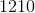

Descompunerea numerelor naturale în produs de puteri de numere prime
Fie  un număr natural pe care dorim să îl descompunem în produs de puteri de factori primi.
un număr natural pe care dorim să îl descompunem în produs de puteri de factori primi.
Se caută cel mai mic număr prim  astfel încât să se dividă cu .
astfel încât să se dividă cu .
Se calculează de câte ori intră în .
Pentru noul număr obținut, se caută din nou cel mai mic număr prim astfel încât numărul să se dividă cu numărul prim obținut.
Se repetă algoritmul până când ultimul număr obținut este prim și se va divide doar cu el însuși.
Toate numerele prime găsite se vor înmulți.
În cazul în care există numere prime care se repetă, produsul se restrânge sub formă de puteri.
Astfel, se obține descompunerea numărului natural în produs de puteri ne numere prime.
Exemple:
- Descompunerea numărului
 este:
este:

Cel mai mic număr prim cu care se divide este  .
.
Cum  , rezultă că intră de
, rezultă că intră de  de ori în .
de ori în .
Cel mai mic număr prim cu care se divide este  .
.
Cum  , rezultă că intră de
, rezultă că intră de  ori în .
ori în .
este număr prim; atunci, cel mai mic număr prim cu care se divide este el însuși.
Cum  , rezultă că intră în o singură dată.
, rezultă că intră în o singură dată.
Descompunerea numărului în produs de puteri de factori primi este:
 .
.
- Descompunerea numărului
 este:
este:

Cel mai mic număr prim care divide pe este  .
.
Cum  , rezultă că intră de
, rezultă că intră de  de ori în .
de ori în .
Cum este un număr prim, rezultă că cel mai mic număr prim cu care se divide este el însuși.
Descompunerea în produs de puteri de factori primi a lui este:
.
- Descompunerea numărului
 este
este  .
.

- Descompunerea numărului  este
 .
.

Observații:
- În cazul în care ultima cifră a numărului care trebuie descompus este
 , atunci putem scrie că numărul se divide cu produsul de factori primi
, atunci putem scrie că numărul se divide cu produsul de factori primi  .
. - Dacă ultimele două cifre sunt , atunci putem scrie că numărul se divide cu produsul de factori primi
 .
.